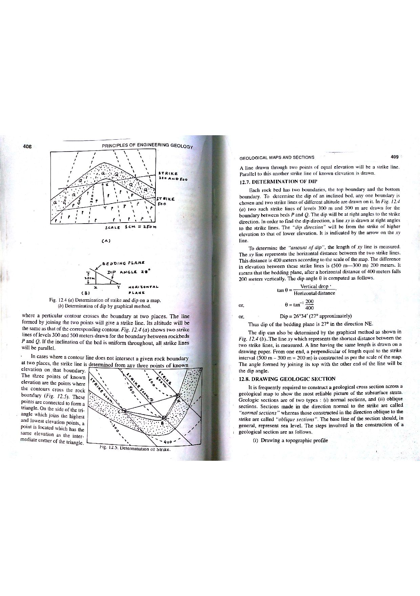

Q130: Electrical Resistivity Arrays: The Schlumberger Configuration and Electrode Geometry
In applied geophysics, hydrogeological exploration, and engineering site characterization, the Direct Current (DC) Electrical Resistivity Method involves introducing a direct (or low-frequency alternating) electrical current into the ground via two outer current electrodes ($A$ and $B$) and measuring the resulting potential difference ($\Delta V$) across two inner potential electrodes ($M$ and $N$) (Telford et al., 1990; Bangar, p. 211).

Geometric Architecture of the Schlumberger Configuration
In the Schlumberger configuration (invented in 1912 by French geophysicists Conrad and Marcel Schlumberger):
- All four electrodes ($A, M, N, B$) are arranged symmetrically along a single straight line on the ground surface about a central benchmark point $O$.
- The two outer electrodes $A$ and $B$ are current electrodes, placed at equal distances from the center: $$OA = OB = L \implies AB = 2L$$
- The two inner electrodes $M$ and $N$ are potential electrodes, positioned closely together around the center: $$OM = ON = l \implies MN = 2l$$
- Defining Geometric Condition: The distance from the potential electrodes to the center ($l$) is strictly less than the distance between the current and potential electrodes ($L - l$): $$l < (L - l) \implies 2l < L \quad (\text{standard survey practice requires } MN \le \frac{AB}{5} \implies 2l \le \frac{2L}{5})$$

Derivation from Point Source Potential Theory
The electric potential $V$ at a distance $r$ on the surface of a semi-infinite homogeneous half-space of resistivity $\rho$ due to a point current source $+I$ is:
For a four-electrode array where current $+I$ enters at $A$ and $-I$ exits at $B$:
In the Schlumberger array, from symmetry with center $O$, $OA = OB = L$ and $OM = ON = l$:
- $AM = L - l$
- $BM = L + l$
- $AN = L + l$
- $BN = L - l$
Substituting these distances:
Solving for apparent resistivity ($\rho_a$):

The Schlumberger array is universally preferred over the Wenner array for Vertical Electrical Sounding (VES) (sounding to determine layering with depth) because of distinct field advantages:
- Fewer Electrode Movements: In a Wenner sounding, to increase depth of penetration, all four electrodes must be moved outward simultaneously at every single measurement step. In a Schlumberger sounding, the inner potential electrodes ($M$ and $N$) remain completely stationary at the center for many readings, while only the two outer current electrodes ($A$ and $B$) are moved outward.
- Lower Cable and Manpower Costs: Because potential cables are kept short ($MN \le 2\text{--}10\text{ m}$), contact resistance errors, inductive cable coupling, and field labor are dramatically reduced.
- Immunity to Local Near-Surface Inhomogeneities: Moving potential electrodes across uneven topsoil introduces spurious local "wiggles" into sounding curves. By keeping $M$ and $N$ fixed, the Schlumberger VES curve produces smooth, highly interpretable layering signatures.
- (A) Wenner
- (B) Schlumberger
- (C) Dipole-dipole
- (D) Pole-dipole
In the Wenner array (developed by Frank Wenner in 1915), all four electrodes ($A, M, N, B$) are equidistantly spaced along the survey traverse ($AM = MN = NB = a$). Here, the distance from each potential electrode to the center is $a/2$, while the distance between current and potential electrode is $a$. More importantly, the Wenner configuration is defined by uniform, equal electrode spacing across all four points, which violates the specific geometric inequality described in the question stem.
The Schlumberger array is characterized precisely by the relationship defined in the question stem (Bangar, p. 211; Telford et al., p. 535). Current electrodes ($A, B$) are spaced far apart ($OA = OB = L$), while potential electrodes ($M, N$) are closely spaced about the center ($OM = ON = l$). The distance from potential electrode to center is $l$, whereas the distance between current and potential electrodes is $L - l$. Under standard survey protocols ($MN \le AB/5 \implies 2l \le 0.4L \implies l \le 0.2L$), the distance to the center ($l$) is significantly less than the distance between current and potential electrodes ($L - l \ge 0.8L$).
In the Dipole-dipole configuration, the current electrodes $A$ and $B$ form a distinct pair (dipole) of spacing $a$, and the potential electrodes $M$ and $N$ form another distinct dipole of spacing $a$, separated from each other by a large variable integer multiple distance $R = n a$ ($n = 1, 2, 3 \dots 6$). The potential electrodes are not clustered about the center of the total array with current electrodes on opposite outer sides.
In a Pole-dipole array, one current electrode ($B$) is placed at "optical/electrical infinity" ($\ge 5 - 10 \times$ the survey line length), while a single active current electrode ($A$) and a potential dipole ($M, N$) traverse the survey line. It is asymmetric and does not have current electrodes flanking a central potential pair.
| Array Type | Electrode Layout | Geometric Factor ($K$) | Apparent Resistivity Formula ($\rho_a$) | Primary Application & Advantages |
|---|---|---|---|---|
| Schlumberger | $A \dots\dots M - O - N \dots\dots B$ ($MN \le AB/5$, centered at $O$) |
$K = \frac{\pi (L^2 - l^2)}{2l} \approx \frac{\pi L^2}{2l}$ | $\rho_a = \frac{\pi (L^2 - l^2)}{2l} \frac{\Delta V}{I}$ | Vertical Electrical Sounding (VES): Groundwater aquifer mapping, depth to bedrock; only $A, B$ moved outward. |
| Wenner | $A - a - M - a - N - a - B$ (Equal spacing $a$) |
$K = 2\pi a$ | $\rho_a = 2\pi a \frac{\Delta V}{I}$ | Electrical Profiling (Constant Separation Traversing): Lateral mapping of faults, dykes, gravel channels; high signal strength. |
| Dipole-Dipole | $A - a - B \dots\dots n a \dots\dots M - a - N$ | $K = \pi n (n + 1)(n + 2) a$ | $\rho_a = \pi n (n + 1)(n + 2) a \frac{\Delta V}{I}$ | 2D/3D Electrical Resistivity Tomography (ERT): Mineral exploration, deep imaging; low electromagnetic inductive coupling. |
| Pole-Dipole | $A \dots\dots n a \dots\dots M - a - N$ ($B$ at infinity) |
$K = 2\pi n (n + 1) a$ | $\rho_a = 2\pi n (n + 1) a \frac{\Delta V}{I}$ | Deeper penetration with lower transmitted current; moderate signal-to-noise ratio. |
| Pole-Pole | $A - r - M$ ($B, N$ at infinity) |
$K = 2\pi r$ | $\rho_a = 2\pi r \frac{\Delta V}{I}$ | Cross-borehole tomography; mathematically simple but sensitive to background telluric noise. |
In a Schlumberger sounding, current electrodes are positioned at $AB = 100.0\text{ m}$ ($L = 50.0\text{ m}$) and potential electrodes at $MN = 10.0\text{ m}$ ($l = 5.0\text{ m}$). Calculate: (a) the exact geometric factor ($K_{\text{exact}}$), (b) the approximate geometric factor ($K_{\text{approx}} = \frac{\pi L^2}{2l}$), and (c) the percentage error introduced by the approximation.
1. Exact geometric factor: $$K_{\text{exact}} = \frac{\pi (L^2 - l^2)}{2l} = \frac{\pi (50.0^2 - 5.0^2)}{2 \times 5.0} = \frac{\pi (2500 - 25)}{10.0} = \frac{\pi \times 2475}{10.0} = 247.5 \pi \approx 777.54\text{ m}$$ 2. Approximate geometric factor: $$K_{\text{approx}} = \frac{\pi L^2}{2l} = \frac{\pi \times 2500}{10.0} = 250 \pi \approx 785.40\text{ m}$$ 3. Percentage error: $$\text{Error } (\%) = \left(\frac{K_{\text{approx}} - K_{\text{exact}}}{K_{\text{exact}}}\right) \times 100\% = \left(\frac{785.40 - 777.54}{777.54}\right) \times 100\% = \frac{7.86}{777.54} \times 100\% = 1.01\%$$ Observation: When $MN = AB / 10$, the gradient approximation yields only a $1\%$ error.
A Schlumberger array setup has half-current electrode spacing $L = 80.0\text{ m}$ and half-potential electrode spacing $l = 4.0\text{ m}$. A current of $I = 250\text{ mA}$ ($0.250\text{ A}$) is injected into the ground, and the digital receiver measures a potential difference $\Delta V = 18.5\text{ mV}$ ($0.0185\text{ V}$). Calculate the apparent resistivity ($\rho_a$) of the ground in $\Omega\cdot\text{m}$.
1. Calculate exact geometric factor $K$: $$K = \frac{\pi (L^2 - l^2)}{2l} = \frac{\pi (80^2 - 4^2)}{2 \times 4} = \frac{\pi (6400 - 16)}{8} = \frac{\pi \times 6384}{8} = 798 \pi \approx 2507.0\text{ m}$$ 2. Compute resistance $R = \Delta V / I$: $$R = \frac{0.0185\text{ V}}{0.250\text{ A}} = 0.074\ \Omega$$ 3. Calculate apparent resistivity $\rho_a$: $$\rho_a = K \times R = 2507.0\text{ m} \times 0.074\ \Omega = 185.52\ \Omega\cdot\text{m}$$
A Wenner array with electrode spacing $a = 20.0\text{ m}$ yields a resistance reading $R_{\text{Wenner}} = 0.85\ \Omega$. (a) Calculate the apparent resistivity. (b) If a Schlumberger array with identical total outer length ($AB = 3a = 60.0\text{ m}$, so $L = 30.0\text{ m}$) and $MN = 4.0\text{ m}$ ($l = 2.0\text{ m}$) is deployed over the same homogeneous ground, predict the resistance reading ($R_{\text{Schlumberger}}$) that will be measured.
1. Wenner apparent resistivity: $$\rho_a = 2\pi a R_{\text{Wenner}} = 2\pi (20.0\text{ m}) \times 0.85\ \Omega = 40 \pi \times 0.85 = 34 \pi \approx 106.81\ \Omega\cdot\text{m}$$ 2. Schlumberger geometric factor for $L = 30\text{ m}, l = 2\text{ m}$: $$K_{\text{Schl}} = \frac{\pi (30^2 - 2^2)}{2 \times 2} = \frac{\pi (900 - 4)}{4} = \frac{896 \pi}{4} = 224 \pi \approx 703.72\text{ m}$$ 3. Resistance measured by Schlumberger receiver: $$R_{\text{Schlumberger}} = \frac{\rho_a}{K_{\text{Schl}}} = \frac{106.81\ \Omega\cdot\text{m}}{703.72\text{ m}} = 0.1518\ \Omega = 151.8\text{ m}\Omega$$
A geophysicist conducts vertical electrical soundings over four different sedimentary terranes and records the following true resistivity profiles ($\rho_1, \rho_2, \rho_3$): (A) Topsoil ($150\ \Omega\cdot\text{m}$), Saline Aquifer ($15\ \Omega\cdot\text{m}$), Granite Bedrock ($1200\ \Omega\cdot\text{m}$); (B) Clay loam ($40\ \Omega\cdot\text{m}$), Dry Sandstone ($800\ \Omega\cdot\text{m}$), Saturated Shale ($60\ \Omega\cdot\text{m}$); (C) Laterite ($300\ \Omega\cdot\text{m}$), Weathered Gneiss ($120\ \Omega\cdot\text{m}$), Clayey Silt ($25\ \Omega\cdot\text{m}$); (D) Topsoil ($50\ \Omega\cdot\text{m}$), Fresh Sandstone ($350\ \Omega\cdot\text{m}$), Dense Quartzite ($2500\ \Omega\cdot\text{m}$). Classify each profile into its canonical curve type (H, K, Q, or A type).
According to standard 3-layer VES curve taxonomy:
- Profile A ($\rho_1 > \rho_2 < \rho_3$): $150 > 15 < 1200\ \Omega\cdot\text{m}$ → H-Type Curve (Bowl-shaped / Minimum curve). Diagnostic of a low-resistivity intermediate target (freshwater or saline aquifer).
- Profile B ($\rho_1 < \rho_2 > \rho_3$): $40 < 800 > 60\ \Omega\cdot\text{m}$ → K-Type Curve (Bell-shaped / Maximum curve). Diagnostic of a high-resistivity resistive layer (dry sand/gravel or basalt cap).
- Profile C ($\rho_1 > \rho_2 > \rho_3$): $300 > 120 > 25\ \Omega\cdot\text{m}$ → Q-Type Curve (Descending / Step-down curve). Diagnostic of progressively conducting strata with depth.
- Profile D ($\rho_1 < \rho_2 < \rho_3$): $50 < 350 < 2500\ \Omega\cdot\text{m}$ → A-Type Curve (Ascending / Step-up curve). Diagnostic of increasingly resistive bedrock with depth.
According to Roy and Apparao (1971) and Barker (1989), the median depth of investigation ($z_e$) for homogeneous ground is approximately: $$z_{e(\text{Wenner})} \approx 0.519 a, \quad z_{e(\text{Schlumberger})} \approx 0.190 (AB) = 0.380 L$$ For an exploration target at depth $z = 38.0\text{ m}$, calculate: (a) the required Wenner electrode spacing ($a$), and (b) the required Schlumberger current electrode half-spacing ($L$).
1. Wenner array spacing: $$a = \frac{z_e}{0.519} = \frac{38.0\text{ m}}{0.519} = 73.22\text{ m}$$ Total array span $AB_{\text{Wenner}} = 3a = 3 \times 73.22 = 219.66\text{ m}$. 2. Schlumberger array spacing: $$L = \frac{z_e}{0.380} = \frac{38.0\text{ m}}{0.380} = 100.0\text{ m}$$ Total array span $AB_{\text{Schlumberger}} = 2L = 200.0\text{ m}$.
During a Schlumberger sounding, at $L = 60.0\text{ m}$, the measured voltage $\Delta V$ becomes too small to measure reliably with $MN = 2.0\text{ m}$ ($l = 1.0\text{ m}$). The potential electrodes are expanded to $MN' = 10.0\text{ m}$ ($l' = 5.0\text{ m}$). Two overlapping readings are taken at $L = 60.0\text{ m}$: (1) With $MN = 2\text{ m}$: $\rho_{a1} = 142.0\ \Omega\cdot\text{m}$; (2) With $MN' = 10\text{ m}$: $\rho_{a2} = 156.2\ \Omega\cdot\text{m}$. Calculate the segment shift multiplier ($S = \rho_{a1} / \rho_{a2}$) to tie the subsequent expanded branch back to the master curve.
1. Compute shift scaling multiplier: $$S = \frac{\rho_{a1}}{\rho_{a2}} = \frac{142.0}{156.2} = 0.9091$$ 2. Application: Due to local surface resistivity variations near the new potential electrode positions, all subsequent apparent resistivity values measured with $MN' = 10\text{ m}$ must be multiplied by $S = 0.9091$ to eliminate the discontinuous "jump" and maintain a smooth, continuous VES curve.
In an Electrical Resistivity Tomography (ERT) survey across an ore body, a dipole-dipole array has a dipole length $a = 10.0\text{ m}$ and an electrode separation index $n = 4$. Calculate the geometric factor ($K$) in meters.
1. Use the dipole-dipole geometric factor formula: $$K = \pi n (n + 1)(n + 2) a$$ 2. Substitute $n = 4$ and $a = 10.0\text{ m}$: $$n(n + 1)(n + 2) = 4 \times (4 + 1) \times (4 + 2) = 4 \times 5 \times 6 = 120$$ $$K = \pi \times 120 \times 10.0\text{ m} = 1200 \pi \approx 3769.91\text{ m}$$ Notice: Because $K$ is extremely large ($3770\text{ m}$), received potential difference $\Delta V$ is very small, requiring sensitive multichannel receivers.
A Schlumberger VES survey over a granite gneiss terrain reveals a three-layer H-type curve: $\rho_1 = 280\ \Omega\cdot\text{m}$ (topsoil, thickness $h_1 = 2.5\text{ m}$); $\rho_2 = 45\ \Omega\cdot\text{m}$ (weathered and fractured gneiss, thickness $h_2 = 18.0\text{ m}$); $\rho_3 = 2400\ \Omega\cdot\text{m}$ (massive unweathered granitic basement). (a) Identify the target aquifer layer, (b) calculate the depth to hard basement rock, and (c) calculate the Total Longitudinal Conductance ($S = \sum h_i / \rho_i$) of the overburden above basement.
1. Target Aquifer: Layer 2 ($\rho_2 = 45\ \Omega\cdot\text{m}$) represents saturated, highly weathered and fractured granite gneiss, which is the primary groundwater aquifer in hard-rock terrains. 2. Depth to hard basement rock: $$Z_{\text{basement}} = h_1 + h_2 = 2.5\text{ m} + 18.0\text{ m} = 20.5\text{ m}$$ 3. Total Longitudinal Conductance ($S$): $$S = \frac{h_1}{\rho_1} + \frac{h_2}{\rho_2} = \frac{2.5\text{ m}}{280\ \Omega\cdot\text{m}} + \frac{18.0\text{ m}}{45\ \Omega\cdot\text{m}} = 0.00893 + 0.4000 = 0.4089\ \Omega^{-1} \text{ (or Siemens)}$$ Hydrogeological Rule: Longitudinal conductance $S > 0.3\text{ Siemens}$ indicates high aquifer protective capacity and prolific groundwater yields.